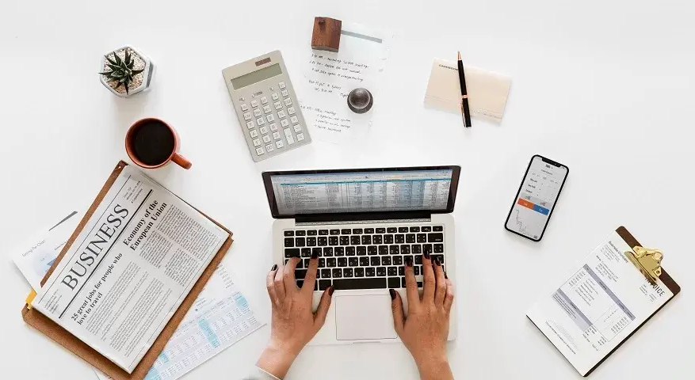

Oleh : PadiUMKM
Jumat, 24 September 2023
1. Membuat Akun Toko dan Media Sosial yang Menarik
Selain mengedepankan unsur estetika, hal yang perlu diperhatikan adalah memastikan bahwa visualisasi akun toko di e-commerce dan media sosial milik Sobat PaDi sudah sesuai dengan identitas dan nuansa brand Sobat PaDi. Usahakan ketika target pembeli mengunjungi akun toko maupun media sosial, mereka bisa menangkap identitas brand melalui konsistensi yang ditawarkan oleh visualisasi akun tersebut. Hal ini bertujuan untuk menarik perhatian target pembeli yang sesuai dengan brand atau usaha milik Sobat PaDi.
2. Logo yang Sesuai dengan Identitas Brand
Hal pertama yang dilihat oleh seorang calon pembeli selain produk adalah logo bisnis. Ini disebabkan oleh penempatan logo bisnis yang memang biasa ditujukan untuk menarik perhatian dan membekas di ingatan konsumen. Oleh karena itu, desain dari logo juga tidak kalah penting dari produk itu sendiri. Tak jarang brand mendunia besar dan ternama seperti Starbucks mengubah logonya dari waktu ke waktu untuk menyesuaikan desain dengan waktu maupun sebagai alat komunikasi yang menandakan evolusi perusahaan. Jadi, penting sekali untuk memperhatikan keselarasan identitas brand dengan warna, bentuk, filosofi, dan estetika dari logo usaha agar brand Sobat PaDi bisa terpatri dalam hati konsumen.
3. Aktif Berinteraksi Melalui Media Sosial
Tak bisa dipungkiri, media sosial pada masa ini merupakan alat komunikasi paling efektif dan jitu dalam menjangkau audiens seluas mungkin. Aktif dalam berinteraksi di sosial media bukan semerta-merta mengunggah konten setiap hari tetapi berinteraksi secara langsung dengan audiens media sosial milik Sobat PaDi. Dalam mengunggah konten maupun berinteraksi, Sobat PaDi bisa menyelipkan informasi produk agar tetap memberikan wawasan mengenai produk. Selain itu, untuk membuat akun media sosial Sobat PaDi lebih interaktif dan menarik, Sobat PaDi bisa mengunggah konten selingan seperti games ringan maupun pertanyaan-pertanyaan yang membuat audiens berinteraksi secara langsung di unggahan media sosial Sobat PaDi.